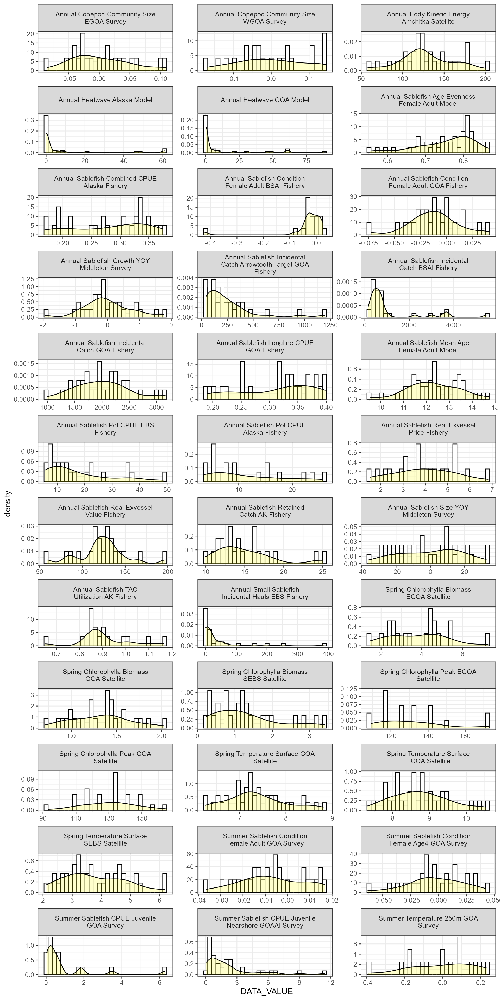

Create figures
create-figures.RmdAfter installing the package, you can use the functions to create figures. You can use your own input data, or you can use some of the prior ESP data that is included in the package. When you run these functions locally, it will probably be more helpful to set out = "save" and specify a file name for the plot so that the plots are saved rather than displayed in RStudio. This is because the plots all display a large amount of data that will be very squashed in the RStudio image viewer. You may also need to adjust the width and height options to produce a figure of satisfactory dimensions.
Metrics panel
AKesp::esp_metrics(
data = AKesp::metric_panel,
species = "Sablefish",
region = "GOA",
approved = TRUE,
order = TRUE,
out = "ggplot"
)
Correlation matrices
dat <- AKesp::get_esp_data("Alaska Sablefish")
AKesp::esp_cor_matrix_long(
data = dat,
out = "ggplot"
)
Traffic plots
Traffic light plots are broken into multiple images, each with 5 plots.
AKesp::esp_traffic_long(
data = dat,
paginate = TRUE,
out = "ggplot",
silent = TRUE
)